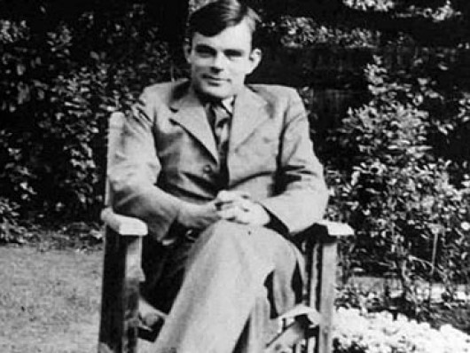
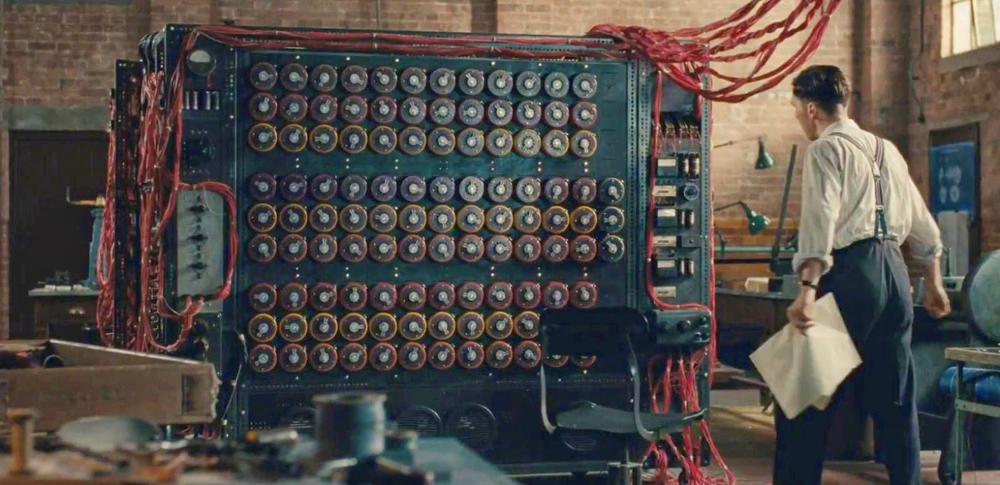

Alan Mathison Turing


Here is the time line of allen turing's life.
- June 23,1912 - Alan Mathison Turing was born in Paddington, London, to Julius Mathison and Ethel Sara. Julius was employed with the 'Indian Civil Service.' Alan had a brother named John.
- He pursued his elementary education from 'St Michael's,' later studying at 'Sherborne School' in Dorset, starting from 1926.
- 1931 - he began attending 'King's College' at the 'University of Cambridge,' graduating in mathematics three years later with top scores.
- 1936-38 - he was taught at the 'Princeton University,' by famous American logician, Alonzo Church. Along with lessons in mathematics, Alan was also taught cryptology. Towards the end of this period, he was able to get his PhD from the university. After this, he was also taught by Ludwig Wittgenstein at the 'University of Cambridge.'
- September 1938 - Turing took up a part-time job at the 'Government Code and Cypher School' (GC&CS), an organization that specialized in breaking war codes. The 'GC&CS' was located at Bletchley Park during the ‘World War II,’ and it was here that Alan was accompanied by fellow code-breaker, Dilly Knox.
- The young mathematician was appointed to break the codes sent by German officials during ‘World War II.’ The codes were sent through the radio machine, 'Enigma.' In 1939, the 'Polish Cipher Bureau' had shared with the 'GC&CS' their method of breaking the codes.
- December 1939 - he developed a decrypting technique, using statistical analysis, and called it the 'Banburismus.' The 'Banburismus' had the potential to decipher the 'Enigma' codes, which were more complex than those used by other warring countries.
- 1939 - Alan was awarded the 'Smith's Prize', by the 'University of Cambridge' for his exceptional contribution in the field of applied mathematics.
- 1945-47 - Turing began working at the 'National Physical Laboratory' (NPL), where he developed a machine called the 'Automatic Computing Engine' (ACE).
- 1948 - Turing began working at the 'Computing Laboratory' which was initiated by mathematician Max Newman, and located in the 'University of Manchester.' It was here that Turing began to show an inclination towards mathematical biology.
- 1948 - he also came up with the 'LU decomposition method,' a pioneering technique which is presently used to solve matrices.
- 1952-54 - despite failing health, he pursued research on mathematical biology, and produced a thesis titled 'The Chemical Basis of Morphogenesis.'
- June 7,1954 - dies at the age of 41.
Awards and Achivements
Alan was awarded the 'Smith's Prize' in 1939, by the 'University of Cambridge' for his exceptional contribution in the field of applied mathematics.
In 1945, this great mathematician was honored by King George VI with the 'Most Excellent Order of the British Empire' for his services during the ‘World War II.’
Legacy
At the age of 39, Alan got into a relationship with the 19-year-old Arnold Murray. During a burglary investigation at the mathematician's house, personal details about his homosexuality came into light, and Alan was arrested on charges of indecency.
After his conviction in 1952, he was given a choice between hormonal castration and imprisonment. The ingenious logician chose hormonal castration through medication so that he could continue his scientific work at home.
On June 8, 1954, Alan was found poisoned at home. After the autopsy, it was concluded that he had taken his own life by consuming large quantities of potassium cyanide.
Several awards have been named after this mathematical genius. Also, many biographies were penned, and the most notable was written by the 'Royal Society.'
The 2014 movie 'The Imitation Game' was based on Alan's life. In the movie, British actor Benedict Cumberbatch played the mathematician's role.
Turing is featured in Ian McEwan's 2019 novel ‘Machines like Me.’
I don't have time to write all about his genius. You should read more about this incredible human being on his Wikipedia entry.